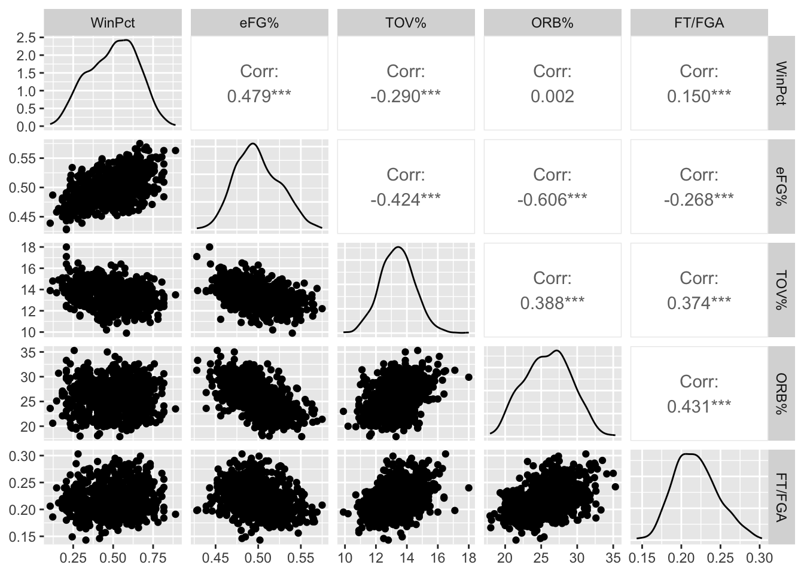

- About
- 1 Exploratory Data Analysis
- 2 Probability
- Chapter Preview
- 2.1 Definitions
- 2.2 Set Theory
- 2.3 Axioms, Properties, and Laws
- 2.4 Combinatorics
- 2.5 Odds and Gambling
- 2.6 Random Variables
- 2.7 Common Random Variables
- 2.8 Extra Stuff
- 2.8.1 Sets and Conditional Probability
- 2.8.2 Binomials and Multinomials
- 2.8.3 Expectation - Baseball
- 2.8.4 Basketball Scenario
- 2.8.5 Multiple Probability Distributions - Basketball
- 2.8.6 Law of Total Probability - Baseball
- 2.8.7 Multinomial Distribution - Baseball
- 2.8.8 Bayes - injured baseball player
- 3 Monte Carlo Simulation
- 4 Statistical Inference
- 5 Correlation
- 6 Linear Regression
- References
3.3 Simulating Streaks
Streaks are often of interest to casual sports fans. Some especially famous streaks include Joe DiMaggio’s 56-game hitting streak in 1941, Wayne Gretzky’s 51 consecutive games with a point in 1983-1984, and the Chicago Cubs 108 year World Series drought.
Simulation can be helpful in quantifying the likelihood of different kinds of streaks like winning streaks or hitting streaks.
3.3.1 Winning Streak Simulation
Example 3.5 Suppose an NBA team is in the middle of a rebuild and has a 25% probability of winning each of its games in the following 82-game season. What is the probability that the team will go on at least one winning streak of four or more games over the course of the 82-game season? Use simulation to answer this question.
We can simulate a season for the team, find the longest winning streak in that season, and store it in a vector. After repeating that process 10,000 times, we can then find the proportion of the values in that vector that are greater than or equal to 4.
set.seed(2022)
n.sims <- 10000
n.games <- 82
win.prob <- 0.25
longest_streak <- rep(NA, n.sims)
for (i in 1:n.sims) {
game_results <- rbinom(size = 1, n = n.games, prob = win.prob) # 1=win, 0=loss
streaks <- rle(game_results)
longest_streak[i] <- max(streaks$lengths[streaks$values==1])
}
table(longest_streak)## longest_streak
## 1 2 3 4 5 6 7 8 9
## 116 3626 4233 1480 410 105 21 7 2mean(longest_streak >= 4)## [1] 0.2025The team had a 4+ game winning streak in about 20% of the simulations.
3.3.2 Hitting Streak Simulation
In 1941, New York Yankee Joe DiMaggio had a 56-game hitting streak which is an all-time record in MLB. How unlikely was such an outcome?
Background videos on DiMaggio’s 56 game hitting streak:
https://www.youtube.com/watch?v=Y5K49dtOKmo
https://www.youtube.com/embed/BErlc16YS8A
Example 3.6 Let’s build a simulation to estimate the probability of a hitting streak of at least 56 games using DiMaggio’s statistics. DiMaggio’s 1941 game log is contained in dimaggio41.csv.
dimaggio <- read_csv("data/dimaggio41.csv", col_names = TRUE)
names(dimaggio)## [1] "Rk" "Gtm" "Date" "Opp" "Rslt" "PA" "AB" "R" "H" "2B"
## [11] "3B" "HR" "RBI" "BB" "IBB" "SO" "HBP" "SH" "SF" "ROE"
## [21] "GDP" "SB" "CS" "BA" "OBP" "SLG" "OPS" "BOP" "aLI" "WPA"
## [31] "acLI" "cWPA" "RE24" "Pos"nrow(dimaggio)## [1] 140dimaggio %>% select(1:13) %>% slice(1:10,139:140) %>% kt()| Rk | Gtm | Date | Opp | Rslt | PA | AB | R | H | 2B | 3B | HR | RBI |
|---|---|---|---|---|---|---|---|---|---|---|---|---|
| 1 | 1 | Apr 14 | WSH | W3-0 | 4 | 4 | 0 | 2 | 0 | 1 | 0 | 1 |
| 2 | 2 | Apr 15 | PHA | L1-3 | 4 | 4 | 1 | 2 | 1 | 0 | 0 | 0 |
| 3 | 3 | Apr 16 | PHA | L7-10 | 5 | 5 | 1 | 4 | 2 | 0 | 1 | 2 |
| 4 | 4 | Apr 17 | PHA | W9-4 | 5 | 4 | 2 | 2 | 0 | 0 | 0 | 0 |
| 5 | 5 | Apr 18 | WSH | L4-7 | 4 | 4 | 1 | 1 | 0 | 0 | 0 | 1 |
| 6 | 6 | Apr 19 | WSH | W5-2 | 5 | 5 | 1 | 1 | 0 | 0 | 1 | 2 |
| 7 | 7 | Apr 20 | PHA | W19-5 | 6 | 5 | 4 | 3 | 0 | 0 | 1 | 6 |
| 8 | 8 | Apr 21 | PHA | W14-4 | 6 | 5 | 3 | 4 | 1 | 0 | 1 | 2 |
| 9 | 9 | Apr 22 | PHA | L5-6 | 4 | 3 | 1 | 0 | 0 | 0 | 0 | 0 |
| 10 | 10 | Apr 23 | BOS | W4-2 | 5 | 4 | 0 | 0 | 0 | 0 | 0 | 1 |
| 139 | 156 | Sep 28 | WSH | L0-5 | 4 | 4 | 0 | 1 | 1 | 0 | 0 | 0 |
| NA | NA | NA | NA | 90-47 | 622 | 541 | 122 | 193 | 43 | 11 | 30 | 125 |
DiMaggio played in 139 games, had 622 plate appearances, 541 at-bats, and 193 hits.
# remove last row (totals)
dimaggio <- dimaggio %>% slice(1:139)
# Create indicator variable for a hit
hit.game <- ifelse(dimaggio$H > 0,1,0)
# Use rle to calculate the streak lengths
streaks <- rle(hit.game)
table(streaks)## values
## lengths 0 1
## 1 5 2
## 2 4 3
## 3 4 2
## 4 0 2
## 5 0 1
## 7 0 1
## 8 0 1
## 16 0 1
## 56 0 1As seen above, DiMaggio had a 56-game hitting streak. An impossible feat to match?
- Create a histograms for DiMaggio’s per game plate appearances and at bats. (Hint: for discrete values,
geom_bar()is often a good option.)
library(gridExtra)
p1 <- dimaggio %>%
ggplot(aes(x=PA)) +
geom_bar() +
scale_x_continuous(breaks=0:10) +
ggtitle("DiMaggio Plate Appearances Per Game, 1941") +
xlab("Plate Appearances")
p2 <- dimaggio %>%
ggplot(aes(x=AB)) +
geom_bar() +
scale_x_continuous(breaks=0:10) +
ggtitle("DiMaggio At-Bats Per Game, 1941") +
xlab("At-Bats")
grid.arrange(p1, p2, ncol = 1)
- Create a frequency and percentage frequency table for plate appearances and at-bats.
library(janitor)
table.pa = tabyl(dimaggio,PA) %>%
adorn_totals("row") %>%
adorn_pct_formatting(digits = 1)
names(table.pa) = c("Plate Appearances", "Frequency", "Percent")
table.pa %>% kt()| Plate Appearances | Frequency | Percent |
|---|---|---|
| 2 | 2 | 1.4% |
| 3 | 4 | 2.9% |
| 4 | 70 | 50.4% |
| 5 | 56 | 40.3% |
| 6 | 5 | 3.6% |
| 7 | 1 | 0.7% |
| 9 | 1 | 0.7% |
| Total | 139 | 100.0% |
table.ab = tabyl(dimaggio,AB) %>%
adorn_totals("row") %>%
adorn_pct_formatting(digits = 1)
names(table.ab) = c("At-Bats", "Frequency", "Percent")
table.ab %>% kt()| At-Bats | Frequency | Percent |
|---|---|---|
| 2 | 7 | 5.0% |
| 3 | 37 | 26.6% |
| 4 | 63 | 45.3% |
| 5 | 30 | 21.6% |
| 6 | 1 | 0.7% |
| 8 | 1 | 0.7% |
| Total | 139 | 100.0% |
- DiMaggio had 193 hits in 622 plate appearances over 139 games. We will simulate DiMaggio’s season of 139 games 100,000 times to estimate the probability of a 56-game hitting streak.
There are many ways to do this. Let’s use the empirical probability mass function of his per game plate appearances to simulate the number of plate appearances that he gets in his 139 games.
pa <- tabyl(dimaggio,PA) %>% select(1,2)
pa <- pa %>%
as.data.frame() %>%
mutate(Prob=n/139)
# One simulated season of per game plate appearances
sim.pa <- sample(x=pa$PA,prob = pa$Prob,size=139,replace=T)
sim.pa## [1] 4 4 4 9 4 4 4 5 2 5 5 5 4 5 4 4 4 4 4 4 5 5 4 5 9 7 4 4 5 5 5 5 5 5 6 4 5
## [38] 4 5 4 5 5 4 4 5 4 5 7 2 5 4 5 4 4 4 4 4 5 4 4 4 5 6 4 4 5 4 4 5 4 5 6 4 5
## [75] 4 4 4 4 5 4 5 4 5 4 5 3 5 5 3 5 4 2 4 5 4 4 4 4 5 5 4 5 5 4 5 5 4 5 5 5 4
## [112] 5 4 4 4 5 4 5 4 4 4 4 5 5 4 4 5 5 4 5 4 4 4 4 5 4 4 5 4# DiMaggio Simulation
set.seed(2022)
n.sims <- 10000
n.games <- 139
prob.hit <- 0.310
longest.streak <- rep(0, n.sims)
sim.games <- rep(0,n.games)
for( i in 1: n.sims){
sim.pa <- sample(x=pa$PA,prob = pa$Prob,size=n.games,replace=T)
for( j in 1:n.games){
sim.games[j] <- rbinom(n = 1,size = sim.pa[j],prob = prob.hit)
}
sim.hits <- ifelse(sim.games > 0,1,0)
streaks <- rle(sim.hits)
longest.streak[i] <- max(streaks$lengths[streaks$values==1])
}
# table of longest streaks during simulated seasons
table(longest.streak)## longest.streak
## 6 7 8 9 10 11 12 13 14 15 16 17 18 19 20 21 22 23 24 25
## 3 11 38 127 306 510 756 811 908 920 807 790 685 595 474 421 333 272 258 186
## 26 27 28 29 30 31 32 33 34 35 36 37 38 39 40 41 42 43 44 45
## 142 139 100 81 68 45 51 28 22 16 13 23 14 11 7 1 5 3 4 5
## 46 47 48 49 50 56 58 59
## 2 2 2 1 1 1 1 1longest.streak %>%
as.data.frame() %>%
ggplot(aes(x=longest.streak)) +
geom_histogram(binwidth=2) +
ggtitle("Longest Hitting Streak for 10,000 Simulated DiMaggio 1941 Seasons") +
xlab("Max Hitting Streak in a Simulation Season")
mean.streak <- mean(longest.streak); mean.streak## [1] 17.2849prob56 <- mean(longest.streak>=56); prob56## [1] 3e-04We would prefer to not use nested for loops, as they are slow. Can you find a faster simulation method?
Running the simulation above with set.seed(2022) and n.sims=10000, we get \(P(Streak \geq 66) = 3 \cdot 10^{-4}\). There were three simulated hitting streaks of at least 56 games.
If we run the simulation again with set.seed(2022) but increase n.sims=100000, we get \(P(Streak \geq 66) = \frac{10}{100000} = 10^{-4}\). In other words, we estimate the probability that DiMaggio gets a hitting streak of at least 56 games in 100000 simulated seasons is about 1-in-10000.
Other authors have used different simulation and mathematical methods for estimating the rarity of Dimaggio’s 56 game hitting streak.
Billie et al (2010) used an at-bat rather than plate appearance simulation and estimated the likelihood as 1-in-5000.
Rothman et al (2010) estimated the likelihood as 1-in-10000.